Ein GNSS-Gerät hinzufügen
Es gibt eine Vielzahl von GNSS Geräten, die OpenCPN mit Positionsdaten versorgen können. Wir verwenden hier "GNSS" anstelle von "GPS", da heute die Empfänger in der Regel mehrere Konstellationen nutzen. Neben GPS z.B. Galileo, GLONASS oder Beidou. Der Einfachheit halber zeigen wir an einem GLOBALSAT BU-353S4 wie ein solches Gerät für OpenCPN installiert wird.

Eine Liste einiger anderer verfügbaren GNSS-Geräte HIER.
Ein schon auf dem Schiff vorhandener Empfänger kann mit einem Seriell-USB Adapter eingebunden werden.
Der Emfänger benötigt den Blick auf die Satelliten. U.U. muss man die Position so verändern, dass das der Fall ist. Bei Fiberglassaufbauten ist in der Regel auch ein Empfang unter Deck möglich.
Gerätetreiber
In unserem Beispiel können Gerätetreiber für verschiedene Betriebssysteme heruntergeladen werden HIER
Windows
Laden Sie den Installer für Ihre Version von Windows herunter.
Führen Sie den Installer .exe aus.
Schliessen Sie den GNSS Empfänger an. Windows sollte das Gerät erkennen und den passenden Treiber dafür verwenden.
Optionen Verbindungen
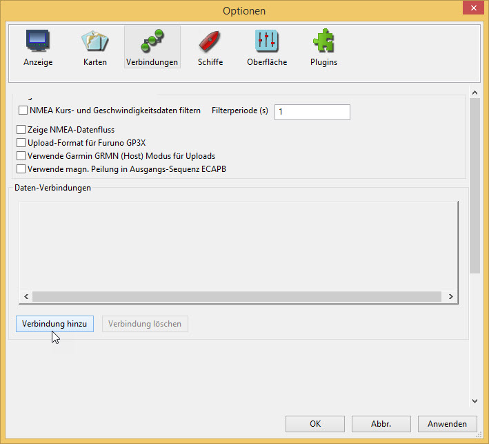
Verbindung hinzufügen
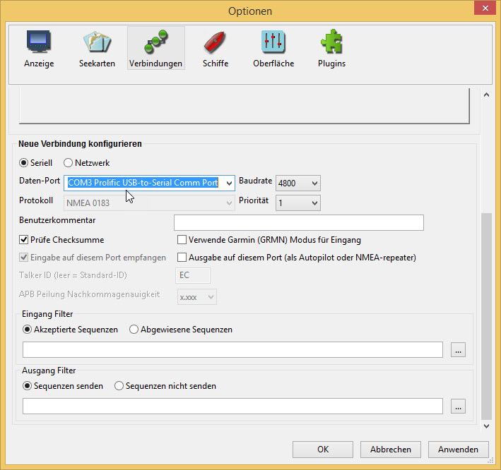
Wählen Sie im DataPort Dropdown-Menü den Prolific USB-Port aus.
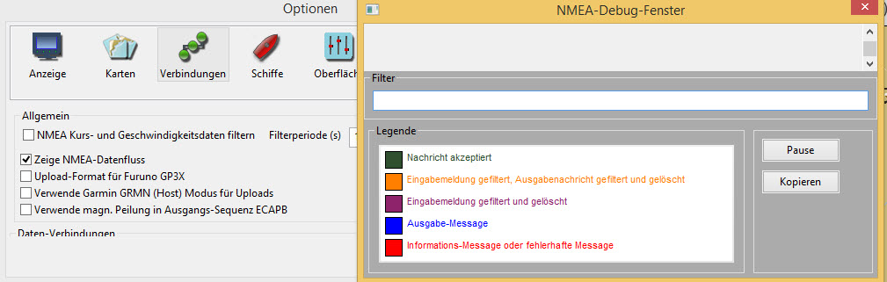
Rollen Sie nach oben und aktivieren sie zeige NMEA Debug Fenster. Das ist nicht unbedingt notwendig, hilft uns aber zu prüfen, ob das GNSS richtig funktioniert.
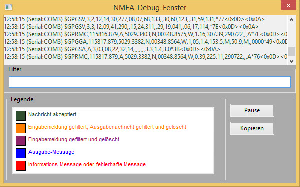
Anwenden OK
Möglicherweise muss man nun die Karten so ausrichten, dass die Schiffsposition angezeigt wird.
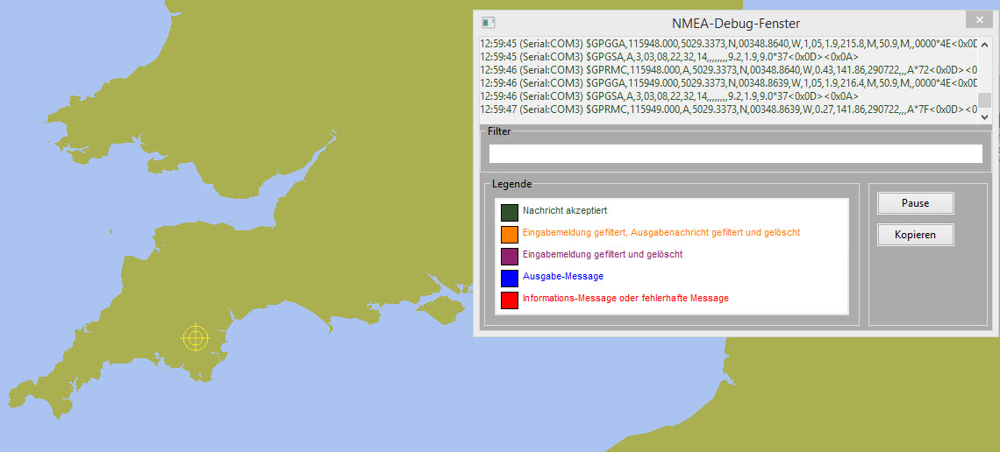
Das NMEA Debug Fenster schliessen wir mit der Schaltfläche Schliessen 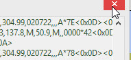.
Das Compass/GPS Status Fenster zeigt ein grünes balken 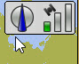, das die Stärke des GNSS Signals angibt.
Die Statusleiste zeigt die Position des Schiffes an.
Hereinzoomen  ändert sich das Symbol für das Schiff in ein Bootsumriss 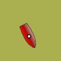. Das Mausrad kann ebenfalls zum Zoomen benutzt werden.
ändert sich das Symbol für das Schiff in ein Bootsumriss 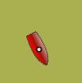. Das Mausrad kann ebenfalls zum Zoomen benutzt werden.
MacOS
Schliessen Sie den GNSS Empfänger an.
Optionen Verbindungen
Verbindung hinzufügen
Seriell verwenden
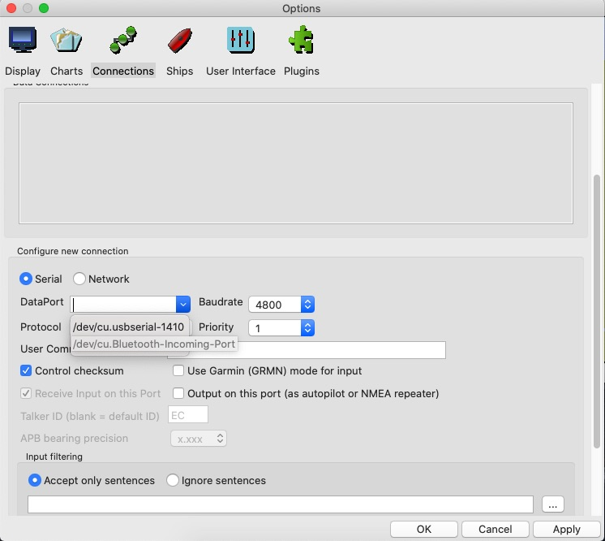
Wählen Sie im Daten-Port Dropdown-Menü /dev/cu.usbserial-1410 aus.

Klicken Sie auf Zeige NMEA Debug Window um die GNSS-Ausgabe anzuzeigen.
Das NMEA Debug Fenster schliessen wir mit der Schaltfläche Schliessen .
Das Compass/GPS Status Fenster zeigt ein grünes Balkenbild: 3.7.jpg[], das die Stärke des GNSS Signals angibt.
Die Statusleiste zeigt die Position des Schiffes an.
Beim Hereinzoomen:3.8.jpg[] ändert sich das Symbol für das Schiff in ein Bootsumriss: 3.9.jpg[]. Das Mausrad kann ebenfalls zum Zoomen benutzt werden.
Linux
Optionen Verbindungen
Verbindung hinzufügen
Unter Serieller Verbindung findet sich im Daten-Port Dropdown ein Eintrag /dev/ttyUSB0-Prolific ….

Anwenden und dann Aktivieren für diese Verbindung.
Eine Nachricht über Berechtigungen erscheint.

Regel installieren
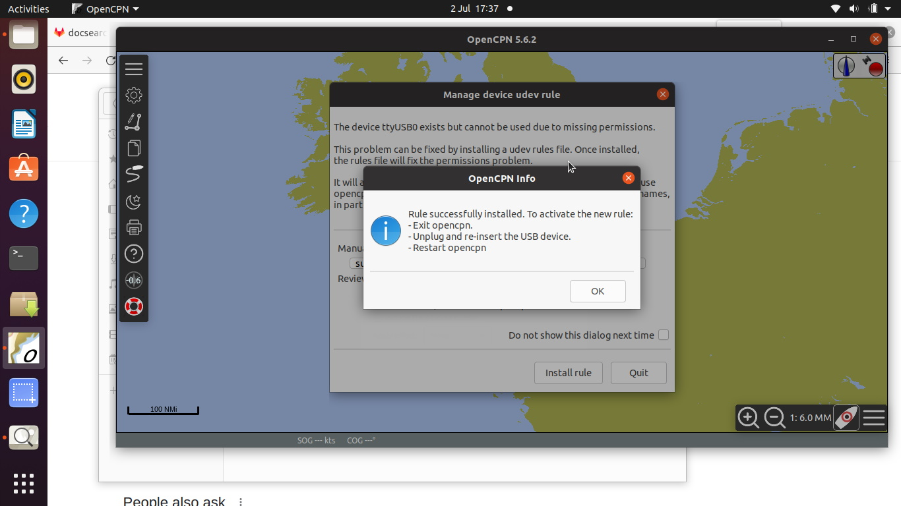
OK
Folgen Sie dem Hinweis zum Neustart von OpenCPN.
Eine Regel (Symlink) wurde für die Verwendung des GNSS Gerätes erstellt.
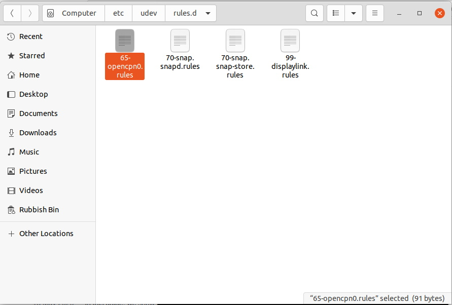
Wenn Sie das GNSS entfernen und die Installation aufräumen wollen, kann der Symlink mit dem Terminal entfernt werden.

Nach dem Neustart von OpenCPN und der Bearbeitung des Daten-Port Eintrags um den Symlink opencpn0 zu verwenden, erscheint die Position des Schiffes auf der Karte.
Hereinzoomen und wir sehen das Booticon .